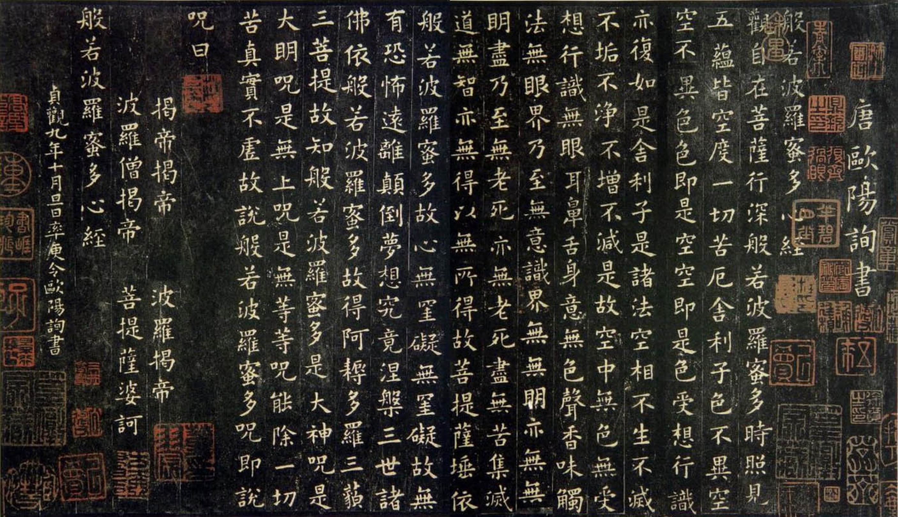
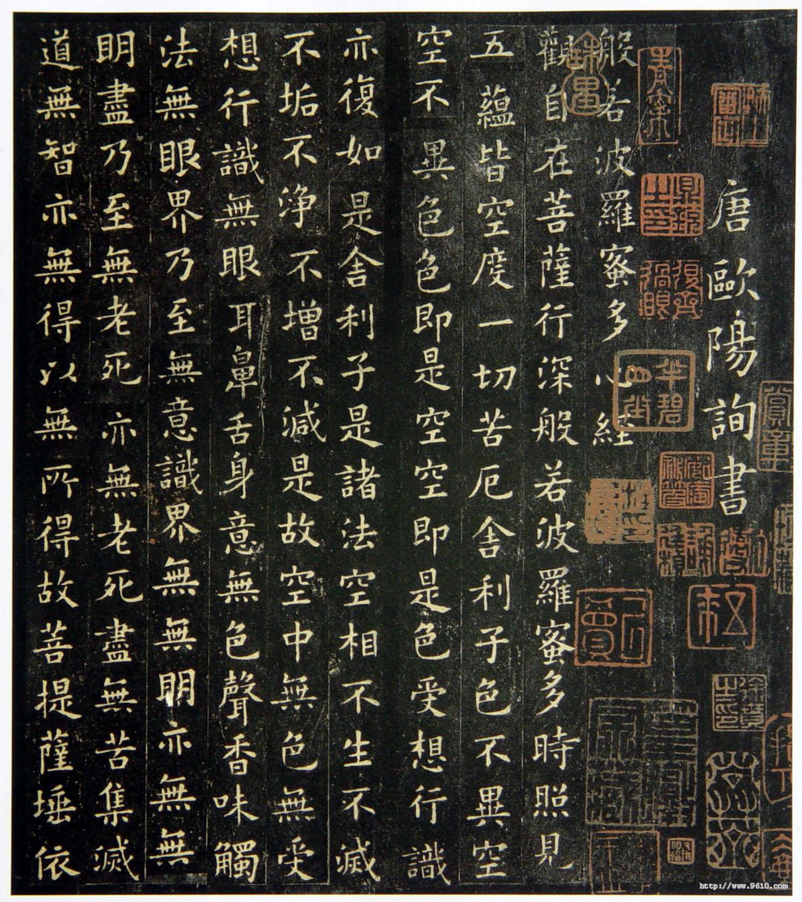
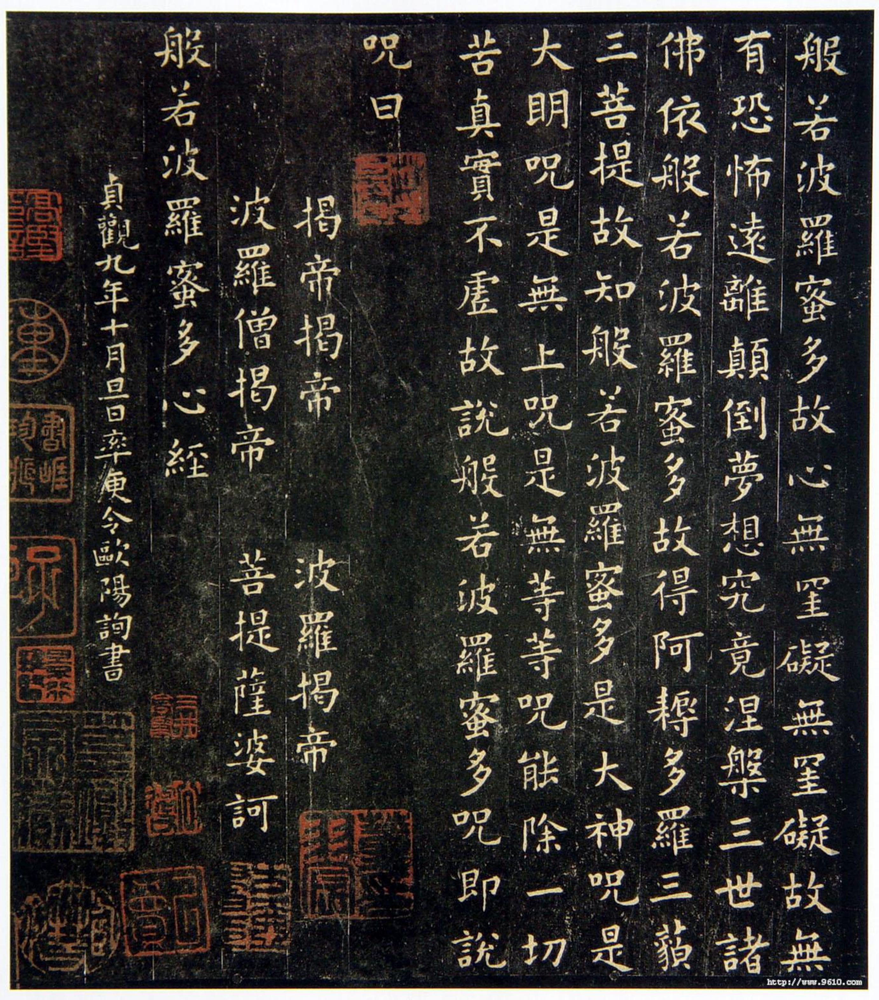

心经
观自在菩萨，行深般若波罗蜜多时照见五蕴皆空，度一切苦厄。
观世音菩萨在深入修行至高智慧法门时，洞见身心世界的五蕴（色、受、想、行、识）本质皆空，由此超脱了一切苦难。
舍利子，色不异空，空不异色。色即是空，空即是色。受想行识，亦复如是。
舍利弗啊，物质现象与空性并无差别，空性也与物质现象无异。物质就是空性，空性就是物质。感受、思想、行为、意识，同样如此。
舍利子，是诸法空相，不生不灭。不垢不净，不增不减。是故空中无色，无受想行识。无眼耳鼻舌身意，无色声香味触法。无眼界，乃至无意识界。无无明，亦无无明尽。乃至无老死，亦无老死尽。无苦集灭道，无智亦无得，以无所得故。
舍利子(人名)，一切存在的本质都是空性：没有生灭，没有污垢或清净，不会增加也不会减少。因此，在空性中没有物质，没有感受、思想、行为和意识；没有眼、耳、鼻、舌、身、意六根，也没有对应的色、声、香、味、触、法六尘；没有视觉的界限，乃至没有意识的界限；没有无明愚痴，也没有无明的终结；没有老死，也没有老死的终结；没有痛苦、执取、寂灭与修道的分别，没有智慧可得，也没有获取的对象，因为本就一无所得。
菩提萨埵，依般若波罗蜜多故。心无挂碍，无挂碍故，无有恐怖。远离颠倒梦想，究竟涅槃。
觉悟者依持这至高智慧，内心没有执着障碍。因无执着，便无恐惧，远离一切颠倒妄想，最终达到彻底解脱的境界。（注：菩提萨埵：指的是一类坚定的修行者。般若波罗蜜多：“般若”指的是“智慧”，“波罗”指“彼岸”，“蜜”指“到”，“多”是语尾的拖音，译“了”（有时“多”也可省略），译成汉文合起来是“到彼岸了”，所以原词指的是“到彼岸的智慧“。）
三世诸佛，依般若波罗蜜多故。得阿耨多罗三藐三菩提。
过去、现在、未来所有佛陀，都依此智慧而获得无上正等正觉。
故知般若波罗蜜多。是大神咒，是大明咒，是无上咒。是无等等咒，能除一切苦，真实不虚。
因此应知：这至高智慧是神圣真言，是光明真言，是无可超越的真言，是平等普度的真言，能消除一切痛苦，真实不虚。
故说般若波罗蜜多咒。即说咒曰，揭谛揭谛，波罗揭谛。波罗僧揭谛，菩提萨婆诃。
所以宣说这智慧真言： “去吧，去吧，迈向彼岸，众人都抵达彼岸， 愿觉悟圆满！”
附上书法欣赏：


